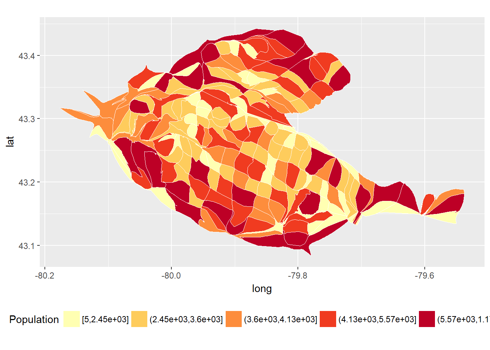
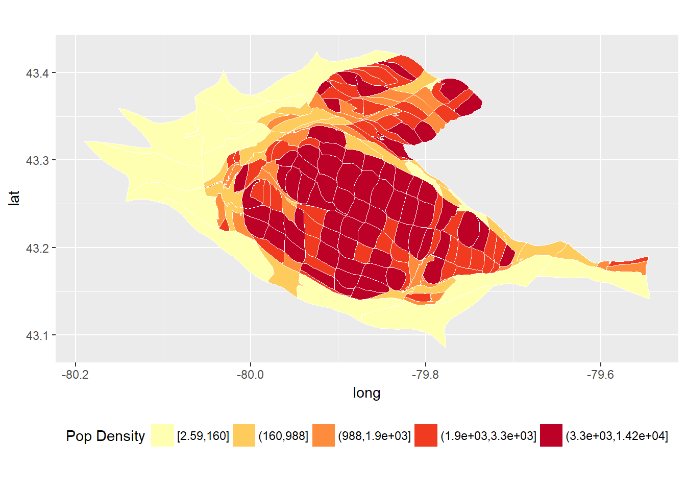
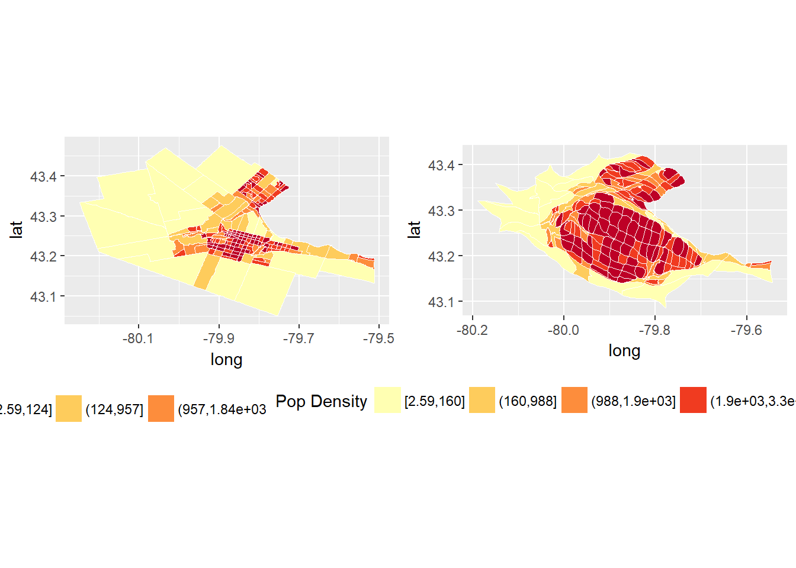

18 Area Data I
18.1 Introduction
NOTE: This is an R Markdown Notebook. When you execute code within the notebook, the results appear beneath the code.
In last few practices/sessions, you learned about spatial point patterns. The next few sessions will concentrate on area data.
For this practice you will need the following:
- This R markdown notebook.
- A shape file called “Hamilton CMA CT”
This dataset includes the spatial information for the census tracts in the Hamilton Census Metropolitan Area (as polygons), and a host of demographic variables from the census of Canada, including population and languages.
18.2 Learning objectives
In this practice, you will learn:
- A formal definition of area data.
- Processes and area data.
- Visualizing area data: Choropleth maps.
- Visualizing area data: Cartograms.
18.3 Suggested reading
O’Sullivan D and Unwin D (2010) Geographic Information Analysis, 2nd Edition, Chapter 7. John Wiley & Sons: New Jersey.
18.4 Preliminaries
As usual, it is good practice to clear the working space to make sure that you do not have extraneous items there when you begin your work. The command in R to clear the workspace is rm (for “remove”), followed by a list of items to be removed. To clear the workspace from all objects, do the following:
rm(list = ls())Note that ls() lists all objects currently on the worspace.
Load the libraries you will use in this activity:
library(tidyverse)
library(rgdal)## Warning: package 'rgdal' was built under R version 3.4.4## Loading required package: sp## rgdal: version: 1.2-18, (SVN revision 718)
## Geospatial Data Abstraction Library extensions to R successfully loaded
## Loaded GDAL runtime: GDAL 2.2.3, released 2017/11/20
## Path to GDAL shared files: C:/Users/Antonio/Documents/R/win-library/3.4/rgdal/gdal
## GDAL binary built with GEOS: TRUE
## Loaded PROJ.4 runtime: Rel. 4.9.3, 15 August 2016, [PJ_VERSION: 493]
## Path to PROJ.4 shared files: C:/Users/Antonio/Documents/R/win-library/3.4/rgdal/proj
## Linking to sp version: 1.2-7library(broom)## Warning: package 'broom' was built under R version 3.4.4library(plotly)## Warning: package 'plotly' was built under R version 3.4.4##
## Attaching package: 'plotly'## The following object is masked from 'package:ggmap':
##
## wind## The following object is masked from 'package:ggplot2':
##
## last_plot## The following object is masked from 'package:stats':
##
## filter## The following object is masked from 'package:graphics':
##
## layoutlibrary(cartogram)
library(gridExtra)##
## Attaching package: 'gridExtra'## The following object is masked from 'package:dplyr':
##
## combineRead the data that you will use for this practice. This is an Esri shape file that will be saved as an object of class SpatialPolygonDataFrame. The function used to read Esri shape files is rgdal::readOGR. Setting integer64 to “allow.loss” keeps the data as integers as opposed to changing to factors or strings:
Hamilton_CT <- readOGR(".", layer = "Hamilton CMA CT", integer64 = "allow.loss")## OGR data source with driver: ESRI Shapefile
## Source: "C:\Antonio\Courses\GEOG 4GA3 - Applied Spatial Analysis\Practical Data Analysis for the Spatial Sciences in R", layer: "Hamilton CMA CT"
## with 188 features
## It has 255 fields
## Integer64 fields read as signed 32-bit integers: ID POPULATION PRIVATE_DW OCCUPIED_D ALL_AGES AGE_4 AGE_5_TO_9 AGE_10_TO_ AGE_15_TO_ AGE_15 AGE_16 AGE_17 AGE_18 AGE_19 AGE_20_TO_ AGE_25_TO_ AGE_30_TO_ AGE_35_TO_ AGE_40_TO_ AGE_45_TO_ AGE_50_TO_ AGE_55_TO_ AGE_60_TO_ AGE_65_TO_ AGE_70_TO_ AGE_75_TO_ AGE_80_TO_ AGE_85 MEDIAN_AGE MALE_ALL_A MALE_4 MALE_5_TO_ MALE_10_TO MALE_15_TO MALE_15 MALE_16 MALE_17 MALE_18 MALE_19 MALE_20_TO MALE_25_TO MALE_30_TO MALE_35_TO MALE_40_TO MALE_45_TO MALE_50_TO MALE_55_TO MALE_60_TO MALE_65_TO MALE_70_TO MALE_75_TO MALE_80_TO MALE_85 MALE_MEDIA FEMALE_ALL FEMALE_4 FEMALE_5_T FEMALE_10_ FEMALE_15_ FEMALE_15 FEMALE_16 FEMALE_17 FEMALE_18 FEMALE_19 FEMALE_20_ FEMALE_25_ FEMALE_30_ FEMALE_35_ FEMALE_40_ FEMALE_45_ FEMALE_50_ FEMALE_55_ FEMALE_60_ FEMALE_65_ FEMALE_70_ FEMALE_75_ FEMALE_80_ FEMALE_85 FEMALE_MED MARRIED_AG MARRIED_OR MARRIED COMMON_LAW UNMARRIED SINGLE SEPARATED DIVORCED WIDOWED MARRIED_A1 MARRIED_O1 MARRIED_M COMMON_LA1 UNMARRIED_ SINGLE_M SEPARATED_ DIVORCED_M WIDOWED_M MARRIED_A2 MARRIED_O2 MARRIED_F COMMON_LA2 UNMARRIED1 SINGLE_F SEPARATED1 DIVORCED_F WIDOWED_F FAMILIES_I FAMILY_SIZ FAMILY_SI1 FAMILY_SI2 FAMILY_SI3 COUPLE_FAM COUPLE_MAR COUPLE_MA1 COUPLE_MA2 COUPLE_MA3 COUPLE_MA4 COUPLE_MA5 COUPLE_COM COUPLE_CO1 COUPLE_CO2 COUPLE_CO3 COUPLE_CO4 COUPLE_CO5 SINGLE_PAR SINGLE_PA1 SINGLE_PA2 SINGLE_PA3 SINGLE_PA4 SINGLE_PA5 SINGLE_PA6 SINGLE_PA7 SINGLE_PA8 CHILDREN_F CHILDREN_1 CHILDREN_2 CHILDREN_3 CHILDREN_4 CHILDREN_5 POPULATIO1 POPULATIO2 POPULATIO3 POPULATIO4 POPULATIO5 POPULATIO6 POPULATIO7 POPULATIO8 POPULATIO9 POPULATI10 POPULATI11 POPULATI12 PRIVATE_HO PRIVATE_HH PRIVATE_H1 PRIVATE_H2 PRIVATE_H3 PRIVATE_H4 PRIVATE_H5 PRIVATE_H6 PRIVATE_H7 PRIVATE_H8 PRIVATE_H9 PRIVATE_10 PRIVATE_11 PRIVATE_12 PRIVATE_13 PRIVATE_14 PRIVATE_15 OCC_PRIVAT OCC_PRIVA1 OCC_PRIVA2 OCC_PRIVA3 OCC_PRIVA4 OCC_PRIVA5 OCC_PRIVA6 OCC_PRIVA7 OCC_PRIVA8 OCC_PRIVA9 PRIVATE_16 PRIVATE_17 PRIVATE_18 PRIVATE_19 PRIVATE_20 PRIVATE_21 PRIVATE_22 PRIVATE_23 NATIVE_LAN NATIVE_LA1 NATIVE_LA2 NATIVE_LA3 NATIVE_LA4 NATIVE_LA5 NATIVE_LA6 NATIVE_LA7 NATIVE_LA8 NATIVE_LA9 NATIVE_L10 NATIVE_L11 NATIVE_L12 NATIVE_L13 NATIVE_L14 NATIVE_L15 NATIVE_L16 NATIVE_L17 NATIVE_L18 NATIVE_L19 NATIVE_L20 NATIVE_L21 NATIVE_L22 NATIVE_L23 NATIVE_L24 NATIVE_L25 NATIVE_L26 NATIVE_L27 NATIVE_L28 NATIVE_L29 NATIVE_L30 NATIVE_L31 NATIVE_L32 NATIVE_L33 NATIVE_L34 NATIVE_L35 NATIVE_L36 NATIVE_L37 NATIVE_L38 NATIVE_L39 NATIVE_L40 NATIVE_L41 NATIVE_L42 NATIVE_L43 NATIVE_L44 NATIVE_L45 NATIVE_L46 NATIVE_L47 NATIVE_L48 NATIVE_L49 NATIVE_L50 NATIVE_L51 NATIVE_L52 NATIVE_L53 NATIVE_L54 NATIVE_L55 NATIVE_L56 NATIVE_L57 NATIVE_L58 NATIVE_L59To use the plotting functions of ggplot2, the SpatialPolygonDataFrame needs to be “tidied” by means of the tidy function of the broom package:
Hamilton_CT.t <- tidy(Hamilton_CT, region = "TRACT")
Hamilton_CT.t <- dplyr::rename(Hamilton_CT.t, TRACT = id)Tidying the spatial dataframe strips it from the non-spatial information, but we can add all the data by means of the left_join function:
Hamilton_CT.t <- left_join(Hamilton_CT.t, Hamilton_CT@data, by = "TRACT")## Warning: Column `TRACT` joining character vector and factor, coercing into
## character vectorNow the tidy dataframe Hamilton_DA.t contains the spatial information and the data.
You can quickly verify the contents of the dataframe by means of summary:
summary(Hamilton_CT.t)## long lat order hole
## Min. :-80.25 Min. :43.05 Min. : 1 Mode :logical
## 1st Qu.:-79.93 1st Qu.:43.21 1st Qu.: 7304 FALSE:29212
## Median :-79.86 Median :43.24 Median :14606
## Mean :-79.86 Mean :43.25 Mean :14606
## 3rd Qu.:-79.80 3rd Qu.:43.28 3rd Qu.:21909
## Max. :-79.51 Max. :43.48 Max. :29212
##
## piece group TRACT ID
## 1:29212 5370124.00.1: 822 Length:29212 Min. : 919807
## 5370121.00.1: 661 Class :character 1st Qu.: 920233
## 5370142.01.1: 642 Mode :character Median : 937830
## 5370100.00.1: 615 Mean : 946568
## 5370101.02.1: 602 3rd Qu.: 959451
## 5370142.02.1: 595 Max. :1115750
## (Other) :25275
## AREA COLORING CMA PROVINCE NAME
## Min. : 0.3154 Min. :0.000 537:29212 00:14311 0124.00: 822
## 1st Qu.: 1.2217 1st Qu.:0.000 01: 9506 0121.00: 661
## Median : 2.6824 Median :2.000 02: 4394 0142.01: 642
## Mean : 18.6962 Mean :1.493 03: 1001 0100.00: 615
## 3rd Qu.: 11.0990 3rd Qu.:2.000 0101.02: 602
## Max. :138.4466 Max. :4.000 0142.02: 595
## (Other):25275
## ABBREV POPULATION PRIVATE_DW OCCUPIED_D LAND_AREA
## ON:29212 Min. : 5 Min. : 0 Min. : 0 Min. : 0.32
## 1st Qu.: 2756 1st Qu.:1191 1st Qu.:1170 1st Qu.: 1.22
## Median : 3901 Median :1526 Median :1436 Median : 2.62
## Mean : 4218 Mean :1648 Mean :1589 Mean : 18.43
## 3rd Qu.: 5293 3rd Qu.:2096 3rd Qu.:1987 3rd Qu.: 11.07
## Max. :11675 Max. :4076 Max. :4016 Max. :137.49
##
## POP_DENSIT ALL_AGES AGE_4 AGE_5_TO_9
## Min. : 2.591 Min. : 0 Min. : 0.0 Min. : 0.0
## 1st Qu.: 254.658 1st Qu.: 2755 1st Qu.: 115.0 1st Qu.: 125.0
## Median : 1511.957 Median : 3905 Median : 175.0 Median : 195.0
## Mean : 1890.627 Mean : 4218 Mean : 230.5 Mean : 237.4
## 3rd Qu.: 2807.857 3rd Qu.: 5295 3rd Qu.: 275.0 3rd Qu.: 290.0
## Max. :14234.286 Max. :11675 Max. :1180.0 Max. :1060.0
##
## AGE_10_TO_ AGE_15_TO_ AGE_15 AGE_16
## Min. : 0.0 Min. : 0.0 Min. : 0.00 Min. : 0.00
## 1st Qu.:140.0 1st Qu.:170.0 1st Qu.: 30.00 1st Qu.: 30.00
## Median :220.0 Median :260.0 Median : 45.00 Median : 55.00
## Mean :252.1 Mean :287.6 Mean : 54.38 Mean : 57.07
## 3rd Qu.:320.0 3rd Qu.:355.0 3rd Qu.: 70.00 3rd Qu.: 75.00
## Max. :795.0 Max. :800.0 Max. :175.00 Max. :180.00
##
## AGE_17 AGE_18 AGE_19 AGE_20_TO_
## Min. : 0.00 Min. : 0.00 Min. : 0.00 Min. : 0.0
## 1st Qu.: 35.00 1st Qu.: 35.00 1st Qu.: 35.00 1st Qu.:180.0
## Median : 50.00 Median : 55.00 Median : 55.00 Median :245.0
## Mean : 58.01 Mean : 58.57 Mean : 59.94 Mean :271.5
## 3rd Qu.: 75.00 3rd Qu.: 75.00 3rd Qu.: 80.00 3rd Qu.:350.0
## Max. :200.00 Max. :255.00 Max. :270.00 Max. :835.0
##
## AGE_25_TO_ AGE_30_TO_ AGE_35_TO_ AGE_40_TO_
## Min. : 0.0 Min. : 0.0 Min. : 0.0 Min. : 0.0
## 1st Qu.:135.0 1st Qu.: 125.0 1st Qu.: 145.0 1st Qu.: 180.0
## Median :205.0 Median : 185.0 Median : 205.0 Median : 245.0
## Mean :240.1 Mean : 245.7 Mean : 259.9 Mean : 290.2
## 3rd Qu.:310.0 3rd Qu.: 280.0 3rd Qu.: 305.0 3rd Qu.: 370.0
## Max. :915.0 Max. :1320.0 Max. :1200.0 Max. :1105.0
##
## AGE_45_TO_ AGE_50_TO_ AGE_55_TO_ AGE_60_TO_
## Min. : 0 Min. : 0.0 Min. : 0.0 Min. : 0.0
## 1st Qu.:215 1st Qu.:220.0 1st Qu.:190.0 1st Qu.:160.0
## Median :300 Median :310.0 Median :300.0 Median :260.0
## Mean :338 Mean :333.1 Mean :291.8 Mean :263.5
## 3rd Qu.:410 3rd Qu.:415.0 3rd Qu.:365.0 3rd Qu.:350.0
## Max. :880 Max. :740.0 Max. :625.0 Max. :540.0
##
## AGE_65_TO_ AGE_70_TO_ AGE_75_TO_ AGE_80_TO_
## Min. : 0.0 Min. : 0.0 Min. : 0.0 Min. : 0.0
## 1st Qu.:130.0 1st Qu.: 95.0 1st Qu.: 75.0 1st Qu.: 50.0
## Median :185.0 Median :140.0 Median :105.0 Median : 85.0
## Mean :200.7 Mean :154.3 Mean :126.3 Mean :100.8
## 3rd Qu.:255.0 3rd Qu.:200.0 3rd Qu.:165.0 3rd Qu.:130.0
## Max. :625.0 Max. :540.0 Max. :575.0 Max. :420.0
##
## AGE_85 MEDIAN_AGE MALE_ALL_A MALE_4
## Min. : 0.00 Min. : 0.00 Min. : 0 Min. : 0.0
## 1st Qu.: 35.00 1st Qu.:38.00 1st Qu.:1345 1st Qu.: 60.0
## Median : 75.00 Median :43.00 Median :1925 Median : 90.0
## Mean : 95.71 Mean :42.06 Mean :2058 Mean :119.3
## 3rd Qu.:125.00 3rd Qu.:46.00 3rd Qu.:2505 3rd Qu.:145.0
## Max. :400.00 Max. :57.00 Max. :5685 Max. :605.0
##
## MALE_5_TO_ MALE_10_TO MALE_15_TO MALE_15
## Min. : 0.0 Min. : 0.0 Min. : 0.0 Min. : 0.00
## 1st Qu.: 65.0 1st Qu.: 75.0 1st Qu.: 85.0 1st Qu.:15.00
## Median :100.0 Median :120.0 Median :130.0 Median :25.00
## Mean :122.8 Mean :129.4 Mean :147.7 Mean :27.56
## 3rd Qu.:150.0 3rd Qu.:155.0 3rd Qu.:185.0 3rd Qu.:40.00
## Max. :540.0 Max. :410.0 Max. :505.0 Max. :95.00
##
## MALE_16 MALE_17 MALE_18 MALE_19
## Min. : 0.00 Min. : 0.0 Min. : 0.0 Min. : 0.00
## 1st Qu.:15.00 1st Qu.: 15.0 1st Qu.: 15.0 1st Qu.: 20.00
## Median :25.00 Median : 25.0 Median : 30.0 Median : 30.00
## Mean :29.37 Mean : 29.2 Mean : 30.7 Mean : 31.35
## 3rd Qu.:35.00 3rd Qu.: 40.0 3rd Qu.: 40.0 3rd Qu.: 40.00
## Max. :90.00 Max. :150.0 Max. :165.0 Max. :170.00
##
## MALE_20_TO MALE_25_TO MALE_30_TO MALE_35_TO
## Min. : 0.0 Min. : 0.0 Min. : 0.0 Min. : 0
## 1st Qu.: 90.0 1st Qu.: 70.0 1st Qu.: 60.0 1st Qu.: 70
## Median :125.0 Median :105.0 Median : 85.0 Median :100
## Mean :139.6 Mean :118.1 Mean :117.2 Mean :125
## 3rd Qu.:180.0 3rd Qu.:155.0 3rd Qu.:135.0 3rd Qu.:145
## Max. :500.0 Max. :385.0 Max. :635.0 Max. :570
##
## MALE_40_TO MALE_45_TO MALE_50_TO MALE_55_TO
## Min. : 0.0 Min. : 0.0 Min. : 0.0 Min. : 0
## 1st Qu.: 90.0 1st Qu.:105.0 1st Qu.:110.0 1st Qu.: 95
## Median :115.0 Median :150.0 Median :145.0 Median :140
## Mean :140.6 Mean :163.9 Mean :164.7 Mean :140
## 3rd Qu.:170.0 3rd Qu.:200.0 3rd Qu.:200.0 3rd Qu.:175
## Max. :570.0 Max. :430.0 Max. :390.0 Max. :320
##
## MALE_60_TO MALE_65_TO MALE_70_TO MALE_75_TO
## Min. : 0.0 Min. : 0.00 Min. : 0.00 Min. : 0.00
## 1st Qu.: 75.0 1st Qu.: 60.00 1st Qu.: 45.00 1st Qu.: 35.00
## Median :125.0 Median : 90.00 Median : 65.00 Median : 50.00
## Mean :127.6 Mean : 96.72 Mean : 73.04 Mean : 57.74
## 3rd Qu.:170.0 3rd Qu.:120.00 3rd Qu.:100.00 3rd Qu.: 80.00
## Max. :270.0 Max. :265.00 Max. :240.00 Max. :275.00
##
## MALE_80_TO MALE_85 MALE_MEDIA FEMALE_ALL
## Min. : 0.00 Min. : 0.0 Min. : 0.00 Min. : 0
## 1st Qu.: 20.00 1st Qu.: 15.0 1st Qu.:37.00 1st Qu.:1405
## Median : 35.00 Median : 25.0 Median :42.00 Median :1920
## Mean : 42.42 Mean : 31.9 Mean :40.91 Mean :2161
## 3rd Qu.: 50.00 3rd Qu.: 35.0 3rd Qu.:45.00 3rd Qu.:2795
## Max. :175.00 Max. :140.0 Max. :52.00 Max. :5990
##
## FEMALE_4 FEMALE_5_T FEMALE_10_ FEMALE_15_
## Min. : 0.0 Min. : 0.0 Min. : 0.0 Min. : 0.0
## 1st Qu.: 50.0 1st Qu.: 60.0 1st Qu.: 70.0 1st Qu.: 80.0
## Median : 85.0 Median : 90.0 Median :105.0 Median :125.0
## Mean :111.1 Mean :114.7 Mean :123.3 Mean :139.1
## 3rd Qu.:135.0 3rd Qu.:135.0 3rd Qu.:160.0 3rd Qu.:170.0
## Max. :580.0 Max. :525.0 Max. :385.0 Max. :640.0
##
## FEMALE_15 FEMALE_16 FEMALE_17 FEMALE_18
## Min. : 0.00 Min. : 0.00 Min. : 0.0 Min. : 0.00
## 1st Qu.:15.00 1st Qu.:15.00 1st Qu.: 15.0 1st Qu.: 15.00
## Median :25.00 Median :25.00 Median : 25.0 Median : 25.00
## Mean :26.67 Mean :28.11 Mean : 28.5 Mean : 27.79
## 3rd Qu.:35.00 3rd Qu.:35.00 3rd Qu.: 35.0 3rd Qu.: 35.00
## Max. :85.00 Max. :95.00 Max. :185.0 Max. :225.00
##
## FEMALE_19 FEMALE_20_ FEMALE_25_ FEMALE_30_
## Min. : 0.00 Min. : 0.0 Min. : 0.0 Min. : 0.0
## 1st Qu.: 15.00 1st Qu.: 80.0 1st Qu.: 65.0 1st Qu.: 65.0
## Median : 25.00 Median :120.0 Median :100.0 Median : 95.0
## Mean : 28.53 Mean :131.9 Mean :122.1 Mean :128.3
## 3rd Qu.: 40.00 3rd Qu.:170.0 3rd Qu.:155.0 3rd Qu.:150.0
## Max. :130.00 Max. :335.0 Max. :530.0 Max. :700.0
##
## FEMALE_35_ FEMALE_40_ FEMALE_45_ FEMALE_50_
## Min. : 0.0 Min. : 0.0 Min. : 0.0 Min. : 0
## 1st Qu.: 75.0 1st Qu.: 90.0 1st Qu.:105.0 1st Qu.:110
## Median :105.0 Median :130.0 Median :155.0 Median :160
## Mean :135.2 Mean :149.5 Mean :173.3 Mean :168
## 3rd Qu.:160.0 3rd Qu.:190.0 3rd Qu.:210.0 3rd Qu.:220
## Max. :660.0 Max. :530.0 Max. :445.0 Max. :355
##
## FEMALE_55_ FEMALE_60_ FEMALE_65_ FEMALE_70_
## Min. : 0.0 Min. : 0.0 Min. : 0.0 Min. : 0.00
## 1st Qu.: 95.0 1st Qu.: 85.0 1st Qu.: 65.0 1st Qu.: 50.00
## Median :155.0 Median :135.0 Median : 90.0 Median : 70.00
## Mean :151.4 Mean :135.9 Mean :103.6 Mean : 80.27
## 3rd Qu.:195.0 3rd Qu.:170.0 3rd Qu.:140.0 3rd Qu.:105.00
## Max. :325.0 Max. :295.0 Max. :360.0 Max. :300.00
##
## FEMALE_75_ FEMALE_80_ FEMALE_85 FEMALE_MED
## Min. : 0.00 Min. : 0.00 Min. : 0.00 Min. : 0.00
## 1st Qu.: 40.00 1st Qu.: 25.00 1st Qu.: 20.00 1st Qu.:39.00
## Median : 60.00 Median : 45.00 Median : 45.00 Median :43.00
## Mean : 68.99 Mean : 58.84 Mean : 63.65 Mean :43.14
## 3rd Qu.: 85.00 3rd Qu.: 80.00 3rd Qu.: 85.00 3rd Qu.:47.00
## Max. :305.00 Max. :240.00 Max. :260.00 Max. :62.00
##
## MARRIED_AG MARRIED_OR MARRIED COMMON_LAW
## Min. : 0 Min. : 0 Min. : 0 Min. : 0.0
## 1st Qu.:2355 1st Qu.:1250 1st Qu.:1065 1st Qu.:145.0
## Median :3230 Median :1995 Median :1715 Median :210.0
## Mean :3497 Mean :2101 Mean :1863 Mean :237.6
## 3rd Qu.:4515 3rd Qu.:2490 3rd Qu.:2250 3rd Qu.:300.0
## Max. :8990 Max. :6500 Max. :5765 Max. :730.0
##
## UNMARRIED SINGLE SEPARATED DIVORCED
## Min. : 0 Min. : 0.0 Min. : 0.00 Min. : 0.0
## 1st Qu.:1035 1st Qu.: 660.0 1st Qu.: 55.00 1st Qu.:110.0
## Median :1335 Median : 840.0 Median : 85.00 Median :175.0
## Mean :1396 Mean : 903.4 Mean : 97.14 Mean :183.8
## 3rd Qu.:1840 3rd Qu.:1165.0 3rd Qu.:125.00 3rd Qu.:230.0
## Max. :2850 Max. :1885.0 Max. :300.00 Max. :515.0
##
## WIDOWED MARRIED_A1 MARRIED_O1 MARRIED_M
## Min. : 0.0 Min. : 0 Min. : 0 Min. : 0.0
## 1st Qu.:120.0 1st Qu.:1145 1st Qu.: 620 1st Qu.: 530.0
## Median :180.0 Median :1595 Median :1000 Median : 860.0
## Mean :211.9 Mean :1686 Mean :1048 Mean : 930.7
## 3rd Qu.:270.0 3rd Qu.:2160 3rd Qu.:1235 3rd Qu.:1115.0
## Max. :645.0 Max. :4360 Max. :3235 Max. :2880.0
##
## COMMON_LA1 UNMARRIED_ SINGLE_M SEPARATED_
## Min. : 0.0 Min. : 0.0 Min. : 0.0 Min. : 0.00
## 1st Qu.: 70.0 1st Qu.: 475.0 1st Qu.: 355.0 1st Qu.: 25.00
## Median :105.0 Median : 585.0 Median : 450.0 Median : 35.00
## Mean :118.2 Mean : 637.6 Mean : 483.6 Mean : 41.16
## 3rd Qu.:150.0 3rd Qu.: 830.0 3rd Qu.: 610.0 3rd Qu.: 55.00
## Max. :360.0 Max. :1360.0 Max. :1175.0 Max. :125.00
##
## DIVORCED_M WIDOWED_M MARRIED_A2 MARRIED_O2
## Min. : 0.00 Min. : 0.00 Min. : 0 Min. : 0
## 1st Qu.: 45.00 1st Qu.: 25.00 1st Qu.:1225 1st Qu.: 625
## Median : 60.00 Median : 40.00 Median :1675 Median :1000
## Mean : 70.22 Mean : 42.61 Mean :1811 Mean :1052
## 3rd Qu.: 90.00 3rd Qu.: 55.00 3rd Qu.:2345 3rd Qu.:1255
## Max. :220.00 Max. :130.00 Max. :4635 Max. :3260
##
## MARRIED_F COMMON_LA2 UNMARRIED1 SINGLE_F
## Min. : 0.0 Min. : 0.0 Min. : 0.0 Min. : 0.0
## 1st Qu.: 535.0 1st Qu.: 70.0 1st Qu.: 525.0 1st Qu.: 285.0
## Median : 855.0 Median :105.0 Median : 680.0 Median : 385.0
## Mean : 933.4 Mean :118.9 Mean : 759.1 Mean : 420.1
## 3rd Qu.:1135.0 3rd Qu.:150.0 3rd Qu.:1010.0 3rd Qu.: 535.0
## Max. :2895.0 Max. :370.0 Max. :1520.0 Max. :1100.0
##
## SEPARATED1 DIVORCED_F WIDOWED_F FAMILIES_I
## Min. : 0.00 Min. : 0.0 Min. : 0.0 Min. : 0
## 1st Qu.: 25.00 1st Qu.: 60.0 1st Qu.: 95.0 1st Qu.: 765
## Median : 55.00 Median :110.0 Median :140.0 Median :1105
## Mean : 55.76 Mean :113.4 Mean :169.1 Mean :1213
## 3rd Qu.: 75.00 3rd Qu.:145.0 3rd Qu.:220.0 3rd Qu.:1530
## Max. :170.00 Max. :320.0 Max. :520.0 Max. :3525
##
## FAMILY_SIZ FAMILY_SI1 FAMILY_SI2 FAMILY_SI3
## Min. : 0.0 Min. : 0 Min. : 0 Min. : 0.0
## 1st Qu.: 385.0 1st Qu.:165 1st Qu.:135 1st Qu.: 60.0
## Median : 515.0 Median :235 Median :225 Median : 90.0
## Mean : 567.3 Mean :260 Mean :269 Mean :116.9
## 3rd Qu.: 700.0 3rd Qu.:335 3rd Qu.:340 3rd Qu.:150.0
## Max. :1485.0 Max. :775 Max. :890 Max. :390.0
##
## COUPLE_FAM COUPLE_MAR COUPLE_MA1 COUPLE_MA2
## Min. : 0 Min. : 0.0 Min. : 0.0 Min. : 0
## 1st Qu.: 605 1st Qu.: 530.0 1st Qu.: 225.0 1st Qu.: 265
## Median : 985 Median : 840.0 Median : 360.0 Median : 430
## Mean :1034 Mean : 915.1 Mean : 390.1 Mean : 525
## 3rd Qu.:1230 3rd Qu.:1095.0 3rd Qu.: 475.0 3rd Qu.: 660
## Max. :3225 Max. :2860.0 Max. :1140.0 Max. :1785
##
## COUPLE_MA3 COUPLE_MA4 COUPLE_MA5 COUPLE_COM
## Min. : 0.0 Min. : 0.0 Min. : 0.0 Min. : 0.0
## 1st Qu.:105.0 1st Qu.:115.0 1st Qu.: 50.0 1st Qu.: 70.0
## Median :170.0 Median :185.0 Median : 80.0 Median :105.0
## Mean :183.9 Mean :236.8 Mean :104.3 Mean :118.3
## 3rd Qu.:220.0 3rd Qu.:295.0 3rd Qu.:135.0 3rd Qu.:150.0
## Max. :645.0 Max. :835.0 Max. :365.0 Max. :365.0
##
## COUPLE_CO1 COUPLE_CO2 COUPLE_CO3 COUPLE_CO4
## Min. : 0.00 Min. : 0.00 Min. : 0.00 Min. : 0.00
## 1st Qu.: 40.00 1st Qu.: 25.00 1st Qu.:10.00 1st Qu.:10.00
## Median : 60.00 Median : 45.00 Median :20.00 Median :15.00
## Mean : 71.22 Mean : 46.83 Mean :22.93 Mean :16.11
## 3rd Qu.: 90.00 3rd Qu.: 55.00 3rd Qu.:30.00 3rd Qu.:20.00
## Max. :265.00 Max. :135.00 Max. :65.00 Max. :55.00
##
## COUPLE_CO5 SINGLE_PAR SINGLE_PA1 SINGLE_PA2
## Min. : 0.000 Min. : 0.0 Min. : 0 Min. : 0.00
## 1st Qu.: 5.000 1st Qu.:105.0 1st Qu.: 75 1st Qu.: 45.00
## Median : 5.000 Median :165.0 Median :135 Median : 75.00
## Mean : 7.254 Mean :179.3 Mean :142 Mean : 81.56
## 3rd Qu.:10.000 3rd Qu.:240.0 3rd Qu.:195 3rd Qu.:110.00
## Max. :30.000 Max. :620.0 Max. :530 Max. :230.00
##
## SINGLE_PA3 SINGLE_PA4 SINGLE_PA5 SINGLE_PA6
## Min. : 0.00 Min. : 0.00 Min. : 0.00 Min. : 0.00
## 1st Qu.: 20.00 1st Qu.: 5.00 1st Qu.:25.00 1st Qu.:15.00
## Median : 35.00 Median : 15.00 Median :40.00 Median :25.00
## Mean : 42.49 Mean : 17.72 Mean :37.52 Mean :24.74
## 3rd Qu.: 60.00 3rd Qu.: 25.00 3rd Qu.:50.00 3rd Qu.:35.00
## Max. :160.00 Max. :135.00 Max. :90.00 Max. :65.00
##
## SINGLE_PA7 SINGLE_PA8 CHILDREN_F CHILDREN_1
## Min. : 0.000 Min. : 0.000 Min. : 0 Min. : 0
## 1st Qu.: 5.000 1st Qu.: 0.000 1st Qu.: 805 1st Qu.: 140
## Median :10.000 Median : 5.000 Median :1195 Median : 210
## Mean : 9.866 Mean : 3.332 Mean :1367 Mean : 276
## 3rd Qu.:15.000 3rd Qu.: 5.000 3rd Qu.:1735 3rd Qu.: 330
## Max. :25.000 Max. :10.000 Max. :4065 Max. :1375
##
## CHILDREN_2 CHILDREN_3 CHILDREN_4 CHILDREN_5
## Min. : 0.0 Min. : 0 Min. : 0.0 Min. : 0.0
## 1st Qu.: 240.0 1st Qu.: 95 1st Qu.:180.0 1st Qu.:115.0
## Median : 375.0 Median :140 Median :290.0 Median :160.0
## Mean : 440.1 Mean :163 Mean :316.3 Mean :171.9
## 3rd Qu.: 560.0 3rd Qu.:205 3rd Qu.:400.0 3rd Qu.:220.0
## Max. :1510.0 Max. :515 Max. :815.0 Max. :420.0
##
## POPULATIO1 POPULATIO2 POPULATIO3 POPULATIO4
## Min. : 0 Min. : 0.0 Min. : 0.00 Min. : 0.00
## 1st Qu.: 2755 1st Qu.: 295.0 1st Qu.: 50.00 1st Qu.: 50.00
## Median : 3865 Median : 425.0 Median : 70.00 Median : 70.00
## Mean : 4149 Mean : 535.2 Mean : 76.49 Mean : 91.68
## 3rd Qu.: 5125 3rd Qu.: 680.0 3rd Qu.: 95.00 3rd Qu.:105.00
## Max. :11675 Max. :2260.0 Max. :200.00 Max. :670.00
##
## POPULATIO5 POPULATIO6 POPULATIO7 POPULATIO8
## Min. : 0 Min. : 0 Min. : 0.0 Min. : 0.0
## 1st Qu.: 170 1st Qu.: 2175 1st Qu.: 390.0 1st Qu.:105.0
## Median : 295 Median : 3340 Median : 545.0 Median :150.0
## Mean : 367 Mean : 3614 Mean : 628.2 Mean :186.6
## 3rd Qu.: 475 3rd Qu.: 4370 3rd Qu.: 845.0 3rd Qu.:235.0
## Max. :1770 Max. :10805 Max. :2270.0 Max. :710.0
##
## POPULATIO9 POPULATI10 POPULATI11 POPULATI12
## Min. : 0.00 Min. : 0.000 Min. : 0.0 Min. : 0.0
## 1st Qu.:20.00 1st Qu.: 5.000 1st Qu.: 70.0 1st Qu.: 260.0
## Median :30.00 Median :10.000 Median :110.0 Median : 385.0
## Mean :30.88 Mean : 8.159 Mean :147.1 Mean : 441.5
## 3rd Qu.:40.00 3rd Qu.:10.000 3rd Qu.:180.0 3rd Qu.: 600.0
## Max. :90.00 Max. :35.000 Max. :670.0 Max. :1715.0
##
## PRIVATE_HO PRIVATE_HH PRIVATE_H1 PRIVATE_H2
## Min. : 0 Min. : 0 Min. : 0 Min. : 0
## 1st Qu.:1170 1st Qu.: 750 1st Qu.: 670 1st Qu.: 550
## Median :1435 Median :1075 Median :1015 Median : 885
## Mean :1589 Mean :1181 Mean :1085 Mean : 941
## 3rd Qu.:1985 3rd Qu.:1490 3rd Qu.:1370 3rd Qu.:1100
## Max. :4015 Max. :3425 Max. :3150 Max. :2930
##
## PRIVATE_H3 PRIVATE_H4 PRIVATE_H5 PRIVATE_H6
## Min. : 0.0 Min. : 0.0 Min. : 0.0 Min. : 0.00
## 1st Qu.: 260.0 1st Qu.: 275.0 1st Qu.: 80.0 1st Qu.: 55.00
## Median : 385.0 Median : 435.0 Median :145.0 Median : 90.00
## Mean : 420.9 Mean : 520.2 Mean :144.2 Mean : 95.69
## 3rd Qu.: 505.0 3rd Qu.: 650.0 3rd Qu.:190.0 3rd Qu.:115.00
## Max. :1180.0 Max. :1755.0 Max. :535.0 Max. :295.00
##
## PRIVATE_H7 PRIVATE_H8 PRIVATE_H9 PRIVATE_10
## Min. : 0.00 Min. : 0.00 Min. : 0.00 Min. : 0.00
## 1st Qu.: 40.00 1st Qu.: 25.00 1st Qu.:10.00 1st Qu.: 15.00
## Median : 60.00 Median : 40.00 Median :15.00 Median : 25.00
## Mean : 64.42 Mean : 45.05 Mean :14.39 Mean : 30.48
## 3rd Qu.: 80.00 3rd Qu.: 55.00 3rd Qu.:20.00 3rd Qu.: 40.00
## Max. :175.00 Max. :145.00 Max. :45.00 Max. :120.00
##
## PRIVATE_11 PRIVATE_12 PRIVATE_13 PRIVATE_14
## Min. : 0.00 Min. : 0.00 Min. : 0.0 Min. : 0.0
## 1st Qu.:10.00 1st Qu.: 15.00 1st Qu.: 190.0 1st Qu.: 170.0
## Median :15.00 Median : 30.00 Median : 330.0 Median : 300.0
## Mean :18.97 Mean : 31.37 Mean : 408.6 Mean : 366.8
## 3rd Qu.:25.00 3rd Qu.: 40.00 3rd Qu.: 545.0 3rd Qu.: 475.0
## Max. :60.00 Max. :115.00 Max. :1980.0 Max. :1770.0
##
## PRIVATE_15 OCC_PRIVAT OCC_PRIVA1 OCC_PRIVA2
## Min. : 0.00 Min. : 0 Min. : 0 Min. : 0.0
## 1st Qu.: 20.00 1st Qu.:1170 1st Qu.: 615 1st Qu.: 0.0
## Median : 30.00 Median :1435 Median : 945 Median : 0.0
## Mean : 41.43 Mean :1589 Mean :1023 Mean : 172.2
## 3rd Qu.: 55.00 3rd Qu.:1985 3rd Qu.:1325 3rd Qu.: 225.0
## Max. :230.00 Max. :4015 Max. :2930 Max. :2340.0
##
## OCC_PRIVA3 OCC_PRIVA4 OCC_PRIVA5 OCC_PRIVA6
## Min. : 0.000 Min. : 0.0 Min. : 0.00 Min. : 0.0
## 1st Qu.: 0.000 1st Qu.: 100.0 1st Qu.: 5.00 1st Qu.: 0.0
## Median : 0.000 Median : 365.0 Median : 15.00 Median : 85.0
## Mean : 5.877 Mean : 387.5 Mean : 49.01 Mean : 204.3
## 3rd Qu.: 0.000 3rd Qu.: 565.0 3rd Qu.: 65.00 3rd Qu.: 350.0
## Max. :190.000 Max. :2435.0 Max. :480.00 Max. :1265.0
##
## OCC_PRIVA7 OCC_PRIVA8 OCC_PRIVA9 PRIVATE_16
## Min. : 0.00 Min. : 0.00 Min. : 0.000 Min. : 0
## 1st Qu.: 10.00 1st Qu.: 5.00 1st Qu.: 0.000 1st Qu.:1170
## Median : 20.00 Median : 45.00 Median : 0.000 Median :1435
## Mean : 32.12 Mean : 99.37 Mean : 2.394 Mean :1589
## 3rd Qu.: 40.00 3rd Qu.:130.00 3rd Qu.: 5.000 3rd Qu.:1990
## Max. :365.00 Max. :885.00 Max. :35.000 Max. :4015
##
## PRIVATE_17 PRIVATE_18 PRIVATE_19 PRIVATE_20
## Min. : 0.0 Min. : 0.0 Min. : 0.0 Min. : 0.0
## 1st Qu.: 175.0 1st Qu.: 380.0 1st Qu.:170.0 1st Qu.:145.0
## Median : 300.0 Median : 470.0 Median :230.0 Median :225.0
## Mean : 366.6 Mean : 537.5 Mean :259.4 Mean :271.4
## 3rd Qu.: 475.0 3rd Qu.: 665.0 3rd Qu.:335.0 3rd Qu.:340.0
## Max. :1765.0 Max. :1340.0 Max. :780.0 Max. :875.0
##
## PRIVATE_21 PRIVATE_22 PRIVATE_23 NATIVE_LAN
## Min. : 0.0 Min. : 0.00 Min. : 0 Min. : 0
## 1st Qu.: 50.0 1st Qu.: 25.00 1st Qu.: 2755 1st Qu.: 2755
## Median : 80.0 Median : 40.00 Median : 3865 Median : 3865
## Mean :102.5 Mean : 50.76 Mean : 4148 Mean : 4171
## 3rd Qu.:125.0 3rd Qu.: 65.00 3rd Qu.: 5125 3rd Qu.: 5290
## Max. :330.0 Max. :200.00 Max. :11675 Max. :11675
##
## NATIVE_LA1 NATIVE_LA2 NATIVE_LA3 NATIVE_LA4
## Min. : 0 Min. : 0 Min. : 0.00 Min. : 0.0
## 1st Qu.: 2725 1st Qu.:2120 1st Qu.: 30.00 1st Qu.: 380.0
## Median : 3840 Median :3035 Median : 50.00 Median : 645.0
## Mean : 4105 Mean :3238 Mean : 54.85 Mean : 811.6
## 3rd Qu.: 5195 3rd Qu.:3930 3rd Qu.: 70.00 3rd Qu.:1035.0
## Max. :11435 Max. :9410 Max. :165.00 Max. :3560.0
##
## NATIVE_LA5 NATIVE_LA6 NATIVE_LA7 NATIVE_LA8 NATIVE_LA9
## Min. :0.0000 Min. :0 Min. :0 Min. :0 Min. :0
## 1st Qu.:0.0000 1st Qu.:0 1st Qu.:0 1st Qu.:0 1st Qu.:0
## Median :0.0000 Median :0 Median :0 Median :0 Median :0
## Mean :0.1523 Mean :0 Mean :0 Mean :0 Mean :0
## 3rd Qu.:0.0000 3rd Qu.:0 3rd Qu.:0 3rd Qu.:0 3rd Qu.:0
## Max. :5.0000 Max. :0 Max. :0 Max. :0 Max. :0
##
## NATIVE_L10 NATIVE_L11 NATIVE_L12 NATIVE_L13 NATIVE_L14
## Min. :0 Min. :0 Min. :0.00000 Min. :0 Min. :0
## 1st Qu.:0 1st Qu.:0 1st Qu.:0.00000 1st Qu.:0 1st Qu.:0
## Median :0 Median :0 Median :0.00000 Median :0 Median :0
## Mean :0 Mean :0 Mean :0.07651 Mean :0 Mean :0
## 3rd Qu.:0 3rd Qu.:0 3rd Qu.:0.00000 3rd Qu.:0 3rd Qu.:0
## Max. :0 Max. :0 Max. :5.00000 Max. :0 Max. :0
##
## NATIVE_L15 NATIVE_L16 NATIVE_L17 NATIVE_L18
## Min. : 0.0 Min. : 0.0000 Min. : 0.000 Min. : 0.000
## 1st Qu.: 375.0 1st Qu.: 0.0000 1st Qu.: 0.000 1st Qu.: 0.000
## Median : 635.0 Median : 0.0000 Median : 0.000 Median : 0.000
## Mean : 805.2 Mean : 0.9897 Mean : 1.499 Mean : 1.009
## 3rd Qu.:1025.0 3rd Qu.: 0.0000 3rd Qu.: 0.000 3rd Qu.: 0.000
## Max. :3540.0 Max. :25.0000 Max. :15.000 Max. :15.000
##
## NATIVE_L19 NATIVE_L20 NATIVE_L21 NATIVE_L22
## Min. : 0.000 Min. : 0.0000 Min. : 0.00 Min. : 0.000
## 1st Qu.: 0.000 1st Qu.: 0.0000 1st Qu.: 5.00 1st Qu.: 0.000
## Median : 0.000 Median : 0.0000 Median : 15.00 Median : 0.000
## Mean : 5.913 Mean : 0.9676 Mean : 38.56 Mean : 1.747
## 3rd Qu.: 5.000 3rd Qu.: 0.0000 3rd Qu.: 45.00 3rd Qu.: 5.000
## Max. :130.000 Max. :25.0000 Max. :345.00 Max. :10.000
##
## NATIVE_L23 NATIVE_L24 NATIVE_L25 NATIVE_L26
## Min. : 0.000 Min. : 0.000 Min. :0.00000 Min. : 0.0000
## 1st Qu.: 0.000 1st Qu.: 0.000 1st Qu.:0.00000 1st Qu.: 0.0000
## Median : 0.000 Median : 0.000 Median :0.00000 Median : 0.0000
## Mean : 1.042 Mean : 5.934 Mean :0.01523 Mean : 0.7054
## 3rd Qu.: 0.000 3rd Qu.: 5.000 3rd Qu.:0.00000 3rd Qu.: 0.0000
## Max. :15.000 Max. :135.000 Max. :5.00000 Max. :10.0000
##
## NATIVE_L27 NATIVE_L28 NATIVE_L29 NATIVE_L30
## Min. : 0.000 Min. : 0.000 Min. : 0.0000 Min. : 0.000
## 1st Qu.: 0.000 1st Qu.: 0.000 1st Qu.: 0.0000 1st Qu.: 0.000
## Median : 0.000 Median : 0.000 Median : 0.0000 Median : 5.000
## Mean : 4.712 Mean : 1.087 Mean : 0.1926 Mean : 9.759
## 3rd Qu.: 5.000 3rd Qu.: 0.000 3rd Qu.: 0.0000 3rd Qu.:15.000
## Max. :180.000 Max. :10.000 Max. :10.0000 Max. :95.000
##
## NATIVE_L31 NATIVE_L32 NATIVE_L33 NATIVE_L34
## Min. : 0.00 Min. : 0.000 Min. : 0.00 Min. : 0.000
## 1st Qu.: 5.00 1st Qu.: 0.000 1st Qu.: 5.00 1st Qu.: 0.000
## Median : 10.00 Median : 0.000 Median : 15.00 Median : 5.000
## Mean : 24.46 Mean : 1.324 Mean : 33.83 Mean : 7.339
## 3rd Qu.: 30.00 3rd Qu.: 0.000 3rd Qu.: 35.00 3rd Qu.: 10.000
## Max. :355.00 Max. :40.000 Max. :315.00 Max. :165.000
##
## NATIVE_L35 NATIVE_L36 NATIVE_L37 NATIVE_L38
## Min. : 0.000 Min. : 0.00 Min. : 0.000 Min. : 0.000
## 1st Qu.: 0.000 1st Qu.: 10.00 1st Qu.: 0.000 1st Qu.: 0.000
## Median : 0.000 Median : 25.00 Median : 0.000 Median : 0.000
## Mean : 2.013 Mean : 35.28 Mean : 1.839 Mean : 0.908
## 3rd Qu.: 5.000 3rd Qu.: 55.00 3rd Qu.: 5.000 3rd Qu.: 0.000
## Max. :10.000 Max. :315.00 Max. :15.000 Max. :10.000
##
## NATIVE_L39 NATIVE_L40 NATIVE_L41 NATIVE_L42
## Min. : 0.0000 Min. :0.00000 Min. : 0.00 Min. : 0.00
## 1st Qu.: 0.0000 1st Qu.:0.00000 1st Qu.: 25.00 1st Qu.: 5.00
## Median : 0.0000 Median :0.00000 Median : 40.00 Median :10.00
## Mean : 0.9412 Mean :0.07719 Mean : 44.03 Mean :11.28
## 3rd Qu.: 0.0000 3rd Qu.:0.00000 3rd Qu.: 65.00 3rd Qu.:15.00
## Max. :10.0000 Max. :5.00000 Max. :120.00 Max. :50.00
##
## NATIVE_L43 NATIVE_L44 NATIVE_L45 NATIVE_L46
## Min. : 0.000 Min. :0.00000 Min. : 0.000 Min. : 0.000
## 1st Qu.: 0.000 1st Qu.:0.00000 1st Qu.: 0.000 1st Qu.: 0.000
## Median : 5.000 Median :0.00000 Median : 0.000 Median : 5.000
## Mean : 7.259 Mean :0.03851 Mean : 1.249 Mean : 7.886
## 3rd Qu.: 10.000 3rd Qu.:0.00000 3rd Qu.: 0.000 3rd Qu.:10.000
## Max. :210.000 Max. :5.00000 Max. :25.000 Max. :60.000
##
## NATIVE_L47 NATIVE_L48 NATIVE_L49 NATIVE_L50
## Min. : 0.00 Min. : 0.0000 Min. : 0.0000 Min. : 0.0
## 1st Qu.:10.00 1st Qu.: 0.0000 1st Qu.: 0.0000 1st Qu.: 35.0
## Median :20.00 Median : 0.0000 Median : 0.0000 Median : 70.0
## Mean :20.23 Mean : 0.9428 Mean : 0.8548 Mean :109.7
## 3rd Qu.:30.00 3rd Qu.: 0.0000 3rd Qu.: 0.0000 3rd Qu.:165.0
## Max. :80.00 Max. :15.0000 Max. :25.0000 Max. :500.0
##
## NATIVE_L51 NATIVE_L52 NATIVE_L53 NATIVE_L54
## Min. : 0.000 Min. : 0.000 Min. : 0.00 Min. : 0.0
## 1st Qu.: 0.000 1st Qu.: 0.000 1st Qu.: 0.00 1st Qu.: 0.0
## Median : 0.000 Median : 0.000 Median : 5.00 Median : 0.0
## Mean : 2.437 Mean : 3.929 Mean : 12.25 Mean : 3.9
## 3rd Qu.: 5.000 3rd Qu.: 5.000 3rd Qu.: 15.00 3rd Qu.: 5.0
## Max. :10.000 Max. :320.000 Max. :135.00 Max. :110.0
##
## NATIVE_L55 NATIVE_L56 NATIVE_L57 NATIVE_L58
## Min. : 0.000 Min. : 0.00 Min. :0.0000 Min. : 0.000
## 1st Qu.: 0.000 1st Qu.: 0.00 1st Qu.:0.0000 1st Qu.: 0.000
## Median : 0.000 Median : 0.00 Median :0.0000 Median : 5.000
## Mean : 1.791 Mean : 2.38 Mean :0.2011 Mean : 3.927
## 3rd Qu.: 0.000 3rd Qu.: 5.00 3rd Qu.:0.0000 3rd Qu.: 5.000
## Max. :25.000 Max. :15.00 Max. :5.0000 Max. :25.000
##
## NATIVE_L59
## Min. : 0.000
## 1st Qu.: 0.000
## Median : 0.000
## Mean : 3.454
## 3rd Qu.: 5.000
## Max. :40.000
## 18.5 Area data
Every phenomena can be measured at a location (ask yourself, what exists outside of space?).
In point pattern analysis, the unit of support is the point, and the source of randomness is the location itself. Many other forms of data are also collected at points. For instance, when the census collects information on population, at its most basic, the information can be georeferenced to an address, that is, a point.
In numerous applications, however, data are not reported at their fundamental unit of support, but rather are aggregated to some other geometry, for instance an area. This is done for several reasons, including the privacy and confidentiality of the data. Instead of reporting individual-level information, the information is reported for zoning systems that often are devised without consideration to any underlying social, natural, or economic processes.
Census data, for instance, is reported at different levels of geography. In Canada, the smallest publicly available geography is called a Dissemination Area or DA. A DA in Canada contains a population between 400 and 700 persons. Thus, instead of reporting that one person (or more) are located at a point (i.e., an address), the census reports the population for the DA. Other data are aggregated in similar ways (income, residential status, etc.)
At the highest level of aggregation, national level statistics are reported, for instance Gross Domestic Product, or GDP. Economic production is not evenly distributed across space; however, the national GDP does not distinguish regional variations in this process.
Ideally, a data analyst would work with data in its most fundamental support. This is not alway possible, and therefore many techniques have been developed to work with data that have been agregated to zones.
When working with areas, it is less practical to identify the area with the coordinates (as we did with points). After all, areas will be composed of lines and reporting all the relevant coordinates is impractical. Sometimes the geometric centroids of the areas are used instead.
More commonly, areas are assigned an index or unique identifier, so that a region will typically consist of a set of \(n\) areas as follows: \[ R = A_1 \cup A_2 \cup A_3 \cup ...\cup A_n. \]
The above is read as “the Region R is the union of Areas 1 to n”.
Regions can have a set of \(k\) attributes or variables associated with them, for instance: \[ \textbf{X}_i=[x_{i1}, x_{i2}, x_{i3},...,x_{ik}] \]
These attributes will typically be counts (e.g., number of people in a DA), or some summary measure of the underlying data (e.g., mean commute time).
18.6 Processes and area data
Imagine that data on income by household were collected as follows:
df <- data.frame(x = c(0.3, 0.4, 0.5, 0.6, 0.7), y = c(0.1, 0.4, 0.2, 0.5, 0.3), Income = c(30000, 30000, 100000, 100000, 100000))Households are geocoded as points with coordinates x and y, whereas income is in dollars.
Plot the income as points (hover over the points to see the attributes):
p <- ggplot(data = df, aes(x = x, y = y, color = Income)) +
geom_point(shape = 17, size = 5) +
coord_fixed()
ggplotly(p)## We recommend that you use the dev version of ggplot2 with `ggplotly()`
## Install it with: `devtools::install_github('hadley/ggplot2')`The underlying process is one of income sorting, with lower incomes to the west, and higher incomes to the east. This could be due to a geographical feature of the landscape (for instance, an escarpment), or the distribution of the housing stock (with a neighborhood that has more expensive houses). These are examples of a variable that responds to a common environmental factor. As an alternative, people may display a preference towards being near others that are similar to them (this is called homophily). When this happens, the variable responds to itself in space.
The quality of similarity or disimilarity between neighboring observations of the same variable in space is called spatial autocorrelation. You will learn more about this later on.
Another reason why variables reported for areas could display similarities in space is as an consequence of the zoning system.
Suppose for a moment that the data above can only be reported at the zonal level, perhaps because of privacy and confidentiality concerns. Thanks to the great talent of the designers of the zoning system (or a felicitous coincidence!), the zoning system is such that it is consistent with the underlying process of sorting. The zones, therefore, are as follows:
zones1 <- data.frame(x1=c(0.2, 0.45), x2=c(0.45, 0.80), y1=c(0.0, 0.0), y2=c(0.6, 0.6), Zone_ID = c('1','2'))If you add these zones to the plot:
p <- ggplot() +
geom_rect(data = zones1, mapping = aes(xmin = x1, xmax = x2, ymin = y1, ymax = y2, fill = Zone_ID), alpha = 0.3) +
geom_point(data = df, aes(x = x, y = y, color = Income), shape = 17, size = 5) +
coord_fixed()
ggplotly(p)## We recommend that you use the dev version of ggplot2 with `ggplotly()`
## Install it with: `devtools::install_github('hadley/ggplot2')`What is the mean income in zone 1? What is the mean income in zone 2? Not only are the summary measures of income highly representative of the observations they describe, the two zones are also highly distinct.
Imagine now that for whatever reason (lack of prior knowledge of the process, convenience for data collection, etc.) the zones instead are as follows:
zones2 <- data.frame(x1=c(0.2, 0.55), x2=c(0.55, 0.80), y1=c(0.0, 0.0), y2=c(0.6, 0.6), Zone_ID = c('1','2'))If you plot these zones:
p <- ggplot() +
geom_rect(data = zones2, mapping = aes(xmin = x1, xmax = x2, ymin = y1, ymax = y2, fill = Zone_ID), alpha = 0.3) +
geom_point(data = df, aes(x = x, y = y, color = Income), shape = 17, size = 5) +
coord_fixed()
ggplotly(p)## We recommend that you use the dev version of ggplot2 with `ggplotly()`
## Install it with: `devtools::install_github('hadley/ggplot2')`What is now the mean income of zone 1? What is the mean income of zone 2? The observations have not changed, and the generating spatial process remains the same. You will notice, however, that the summary measures for the two zones are more similar in this case than they were when the zones more closely captured the underlying process.
18.7 Visualizing area data: choropleth maps
The initial step when working with spatial area data, perhaps, is to visualize the data.
Commonly, area data are visualized by means of choropleth maps. A choropleth map is a map of the polygons that form the areas in the region, each colored in a way to represent the value of an underlying variable.
Lets use ggplot2 to create a choropleth map of population in Hamilton. Notice that the fill color for the polygons is given by cutting the values of POPULATION in five equal segments. In other words, the colors represent zones in the bottom 20% of population, zones in the next 20%, and so on, so that the darkest zones are those with populations so large as to be in the top 20% of the population distribution:
ggplot() + geom_polygon(data = Hamilton_CT.t, aes(x = long, y = lat, group = group, fill = cut_number(POPULATION, 5)),color = NA, size = 0.1) +
scale_fill_brewer(palette = "YlOrRd") +
coord_fixed() +
theme(legend.position = "bottom") +
labs(fill = "Population")
Inspecting the map above, would you say that the distribution of population is random, or not random? If not random, what do you think might be an underlying process for the distribution of population.
Often, creating a choropleth map using the absolute value of a variable can be somewhat misleading. As seen in the map above, the zones with the largest population are also usually large zones. Any process that you might think of will be confounded by the size of the zones. For this reason, it is often more informative when creating a choropleth map to use a variable that is a rate, for instance population divided by area to give population density:
pop_den.map <- ggplot() + geom_polygon(data = Hamilton_CT.t, aes(x = long, y = lat, group = group, fill = cut_number(POPULATION/AREA, 5)),color = "white", size = 0.1) +
scale_fill_brewer(palette = "YlOrRd") +
coord_fixed() +
theme(legend.position = "bottom") +
labs(fill = "Pop Density")
pop_den.map
It can be seen now that the population density is higher in the more central parts of Hamilton, Burlington, Dundas, etc. Does the map look random? If not, what might be an underlying process that explains the variations in population density in a city like Hamilton?
Other times, it is appropriate to standardize instead of by area, by what might be called the population at risk. For instance, lets say that we wanted to explore the distribution of the population of older adults (say, 65 and older). In this case, normalizing not by area, but by the total population, would remove the “size” effect, giving a proportion:
ggplot() + geom_polygon(data = Hamilton_CT.t, aes(x = long, y = lat, group = group, fill = cut_number((AGE_65_TO_ + AGE_70_TO_ + AGE_75_TO_ + AGE_80_TO_ + AGE_85)/POPULATION, 5)),color = NA, size = 0.1) +
scale_fill_brewer(palette = "YlOrRd") +
coord_fixed() +
theme(legend.position = "bottom") +
labs(fill = "Prop Age 65+")
Do you notice a pattern in the distribution of seniors in the Hamilton, CMA?
There are a few things to keep in mind when creating choroplet maps.
First, what classification scheme to use, with how many classes, and what colors?
The examples above were all created using a classification scheme based on the quintiles of the distribution. As noted above, these are obtained by dividing the sample into 5 equal parts to give bottom 20%, etc., of observations. The quintiles are a particular form of a statistical measure known as quantiles, of which the median is value obtained when the sample is divided in two equal sized parts. Other classification schemes may include the mean, standard deviation, and so on.
In terms of how many classes to use, often there is little point in using more than six or seven classes, because the human eye cannot distinguish color differences at a much higher resolution.
The colors are a matter of style, but there are coloring schemes that are colorblind safe (see here).
Secondly, when the zoning system is irregular (as opposed to, say, a raster), large zones can easily become dominant. In effect, much detail in the maps above is lost for small zones, whereas large zones, especially if similarly colored, may mislead the eye as to their relative frequency.
Another mapping technique, the cartogram, is meant to reduce the issues with small-large zones.
18.8 Visualizing area data: cartogram
A cartogram is a map where the size of the zones is adjusted so that instead of being the land area, it is proportional to some other variable of interest.
Lets illustrate the idea behind the cartogram here.
In the maps above, the zones are faithful to their geographical properties. Unfortunately, this obscured the relevance of small zones. A cartogram can be weighted by another variable, say for instance, the population. In this way, the size of the zones will depend on the total population.
Cartograms are implemented in R in the package cartogram.
CT_pop_cartogram <- cartogram(shp = Hamilton_CT, weight = "POPULATION")## Warning in RGEOSMiscFunc(spgeom, byid, "rgeos_area"): Spatial object is not
## projected; GEOS expects planar coordinates
## Warning in RGEOSMiscFunc(spgeom, byid, "rgeos_area"): Spatial object is not
## projected; GEOS expects planar coordinates
## Warning in RGEOSMiscFunc(spgeom, byid, "rgeos_area"): Spatial object is not
## projected; GEOS expects planar coordinates
## Warning in RGEOSMiscFunc(spgeom, byid, "rgeos_area"): Spatial object is not
## projected; GEOS expects planar coordinates## Mean size error for iteration 1: 5.94063097656517## Warning in RGEOSMiscFunc(spgeom, byid, "rgeos_area"): Spatial object is not
## projected; GEOS expects planar coordinates
## Warning in RGEOSMiscFunc(spgeom, byid, "rgeos_area"): Spatial object is not
## projected; GEOS expects planar coordinates## Mean size error for iteration 2: 4.22282836609772## Warning in RGEOSMiscFunc(spgeom, byid, "rgeos_area"): Spatial object is not
## projected; GEOS expects planar coordinates
## Warning in RGEOSMiscFunc(spgeom, byid, "rgeos_area"): Spatial object is not
## projected; GEOS expects planar coordinates## Mean size error for iteration 3: 3.24121918122005## Warning in RGEOSMiscFunc(spgeom, byid, "rgeos_area"): Spatial object is not
## projected; GEOS expects planar coordinates
## Warning in RGEOSMiscFunc(spgeom, byid, "rgeos_area"): Spatial object is not
## projected; GEOS expects planar coordinates## Mean size error for iteration 4: 2.70487592121738## Warning in RGEOSMiscFunc(spgeom, byid, "rgeos_area"): Spatial object is not
## projected; GEOS expects planar coordinates
## Warning in RGEOSMiscFunc(spgeom, byid, "rgeos_area"): Spatial object is not
## projected; GEOS expects planar coordinates## Mean size error for iteration 5: 2.44050500280525## Warning in RGEOSMiscFunc(spgeom, byid, "rgeos_area"): Spatial object is not
## projected; GEOS expects planar coordinates
## Warning in RGEOSMiscFunc(spgeom, byid, "rgeos_area"): Spatial object is not
## projected; GEOS expects planar coordinates## Mean size error for iteration 6: 2.28238579460187## Warning in RGEOSMiscFunc(spgeom, byid, "rgeos_area"): Spatial object is not
## projected; GEOS expects planar coordinates
## Warning in RGEOSMiscFunc(spgeom, byid, "rgeos_area"): Spatial object is not
## projected; GEOS expects planar coordinates## Mean size error for iteration 7: 2.14591026585647## Warning in RGEOSMiscFunc(spgeom, byid, "rgeos_area"): Spatial object is not
## projected; GEOS expects planar coordinates
## Warning in RGEOSMiscFunc(spgeom, byid, "rgeos_area"): Spatial object is not
## projected; GEOS expects planar coordinates## Mean size error for iteration 8: 1.95255176465899## Warning in RGEOSMiscFunc(spgeom, byid, "rgeos_area"): Spatial object is not
## projected; GEOS expects planar coordinates
## Warning in RGEOSMiscFunc(spgeom, byid, "rgeos_area"): Spatial object is not
## projected; GEOS expects planar coordinates## Mean size error for iteration 9: 1.8186943555214## Warning in RGEOSMiscFunc(spgeom, byid, "rgeos_area"): Spatial object is not
## projected; GEOS expects planar coordinates
## Warning in RGEOSMiscFunc(spgeom, byid, "rgeos_area"): Spatial object is not
## projected; GEOS expects planar coordinates## Mean size error for iteration 10: 1.73775203417466## Warning in RGEOSMiscFunc(spgeom, byid, "rgeos_area"): Spatial object is not
## projected; GEOS expects planar coordinates
## Warning in RGEOSMiscFunc(spgeom, byid, "rgeos_area"): Spatial object is not
## projected; GEOS expects planar coordinates## Mean size error for iteration 11: 1.64845060853967## Warning in RGEOSMiscFunc(spgeom, byid, "rgeos_area"): Spatial object is not
## projected; GEOS expects planar coordinates
## Warning in RGEOSMiscFunc(spgeom, byid, "rgeos_area"): Spatial object is not
## projected; GEOS expects planar coordinates## Mean size error for iteration 12: 1.45162213155545## Warning in RGEOSMiscFunc(spgeom, byid, "rgeos_area"): Spatial object is not
## projected; GEOS expects planar coordinates
## Warning in RGEOSMiscFunc(spgeom, byid, "rgeos_area"): Spatial object is not
## projected; GEOS expects planar coordinates## Mean size error for iteration 13: 1.37178691507706## Warning in RGEOSMiscFunc(spgeom, byid, "rgeos_area"): Spatial object is not
## projected; GEOS expects planar coordinates
## Warning in RGEOSMiscFunc(spgeom, byid, "rgeos_area"): Spatial object is not
## projected; GEOS expects planar coordinates## Mean size error for iteration 14: 1.32738198642848## Warning in RGEOSMiscFunc(spgeom, byid, "rgeos_area"): Spatial object is not
## projected; GEOS expects planar coordinates
## Warning in RGEOSMiscFunc(spgeom, byid, "rgeos_area"): Spatial object is not
## projected; GEOS expects planar coordinates## Mean size error for iteration 15: 1.29727221750122Notice that the value of the function cartogram (i.e., its output) is a SpatialPolygonsDataFrame. This object needs to be tidied if we wish to use ggplot2 to visualize it:
CT_pop_cartogram.t <- tidy(CT_pop_cartogram, region = "TRACT")
CT_pop_cartogram.t <- rename(CT_pop_cartogram.t, TRACT = id)As before, the data were stripped from the tidied version of the dataframe, so they need to be restored:
CT_pop_cartogram.t <- left_join(CT_pop_cartogram.t, CT_pop_cartogram@data, by = "TRACT")## Warning: Column `TRACT` joining character vector and factor, coercing into
## character vectorPlotting the cartogram:
ggplot() + geom_polygon(data = CT_pop_cartogram.t, aes(x = long, y = lat, group = group, fill = cut_number(POPULATION, 5)), color = "white", size = 0.1) +
scale_fill_brewer(palette = "YlOrRd") +
coord_fixed() +
theme(legend.position = "bottom") +
labs(fill = "Population")
Notice how the size of the zones has been adjusted.
The cartogram can be combined with coloring schemes, as in choropleth maps:
CT_popden_cartogram <- cartogram(Hamilton_CT, weight = "POP_DENSIT")## Warning in RGEOSMiscFunc(spgeom, byid, "rgeos_area"): Spatial object is not
## projected; GEOS expects planar coordinates
## Warning in RGEOSMiscFunc(spgeom, byid, "rgeos_area"): Spatial object is not
## projected; GEOS expects planar coordinates
## Warning in RGEOSMiscFunc(spgeom, byid, "rgeos_area"): Spatial object is not
## projected; GEOS expects planar coordinates
## Warning in RGEOSMiscFunc(spgeom, byid, "rgeos_area"): Spatial object is not
## projected; GEOS expects planar coordinates## Mean size error for iteration 1: 29.0772344366743## Warning in RGEOSMiscFunc(spgeom, byid, "rgeos_area"): Spatial object is not
## projected; GEOS expects planar coordinates
## Warning in RGEOSMiscFunc(spgeom, byid, "rgeos_area"): Spatial object is not
## projected; GEOS expects planar coordinates## Mean size error for iteration 2: 26.933147928614## Warning in RGEOSMiscFunc(spgeom, byid, "rgeos_area"): Spatial object is not
## projected; GEOS expects planar coordinates
## Warning in RGEOSMiscFunc(spgeom, byid, "rgeos_area"): Spatial object is not
## projected; GEOS expects planar coordinates## Mean size error for iteration 3: 25.1986261892098## Warning in RGEOSMiscFunc(spgeom, byid, "rgeos_area"): Spatial object is not
## projected; GEOS expects planar coordinates
## Warning in RGEOSMiscFunc(spgeom, byid, "rgeos_area"): Spatial object is not
## projected; GEOS expects planar coordinates## Mean size error for iteration 4: 23.7327939549969## Warning in RGEOSMiscFunc(spgeom, byid, "rgeos_area"): Spatial object is not
## projected; GEOS expects planar coordinates
## Warning in RGEOSMiscFunc(spgeom, byid, "rgeos_area"): Spatial object is not
## projected; GEOS expects planar coordinates## Mean size error for iteration 5: 22.4463390026744## Warning in RGEOSMiscFunc(spgeom, byid, "rgeos_area"): Spatial object is not
## projected; GEOS expects planar coordinates
## Warning in RGEOSMiscFunc(spgeom, byid, "rgeos_area"): Spatial object is not
## projected; GEOS expects planar coordinates## Mean size error for iteration 6: 21.2818852763495## Warning in RGEOSMiscFunc(spgeom, byid, "rgeos_area"): Spatial object is not
## projected; GEOS expects planar coordinates
## Warning in RGEOSMiscFunc(spgeom, byid, "rgeos_area"): Spatial object is not
## projected; GEOS expects planar coordinates## Mean size error for iteration 7: 20.2025834378354## Warning in RGEOSMiscFunc(spgeom, byid, "rgeos_area"): Spatial object is not
## projected; GEOS expects planar coordinates
## Warning in RGEOSMiscFunc(spgeom, byid, "rgeos_area"): Spatial object is not
## projected; GEOS expects planar coordinates## Mean size error for iteration 8: 19.1839656200552## Warning in RGEOSMiscFunc(spgeom, byid, "rgeos_area"): Spatial object is not
## projected; GEOS expects planar coordinates
## Warning in RGEOSMiscFunc(spgeom, byid, "rgeos_area"): Spatial object is not
## projected; GEOS expects planar coordinates## Mean size error for iteration 9: 18.2099242308777## Warning in RGEOSMiscFunc(spgeom, byid, "rgeos_area"): Spatial object is not
## projected; GEOS expects planar coordinates
## Warning in RGEOSMiscFunc(spgeom, byid, "rgeos_area"): Spatial object is not
## projected; GEOS expects planar coordinates## Mean size error for iteration 10: 17.2709049215263## Warning in RGEOSMiscFunc(spgeom, byid, "rgeos_area"): Spatial object is not
## projected; GEOS expects planar coordinates
## Warning in RGEOSMiscFunc(spgeom, byid, "rgeos_area"): Spatial object is not
## projected; GEOS expects planar coordinates## Mean size error for iteration 11: 16.3609019577218## Warning in RGEOSMiscFunc(spgeom, byid, "rgeos_area"): Spatial object is not
## projected; GEOS expects planar coordinates
## Warning in RGEOSMiscFunc(spgeom, byid, "rgeos_area"): Spatial object is not
## projected; GEOS expects planar coordinates## Mean size error for iteration 12: 15.4772258019554## Warning in RGEOSMiscFunc(spgeom, byid, "rgeos_area"): Spatial object is not
## projected; GEOS expects planar coordinates
## Warning in RGEOSMiscFunc(spgeom, byid, "rgeos_area"): Spatial object is not
## projected; GEOS expects planar coordinates## Mean size error for iteration 13: 14.619308950628## Warning in RGEOSMiscFunc(spgeom, byid, "rgeos_area"): Spatial object is not
## projected; GEOS expects planar coordinates
## Warning in RGEOSMiscFunc(spgeom, byid, "rgeos_area"): Spatial object is not
## projected; GEOS expects planar coordinates## Mean size error for iteration 14: 13.7881685736231## Warning in RGEOSMiscFunc(spgeom, byid, "rgeos_area"): Spatial object is not
## projected; GEOS expects planar coordinates
## Warning in RGEOSMiscFunc(spgeom, byid, "rgeos_area"): Spatial object is not
## projected; GEOS expects planar coordinates## Mean size error for iteration 15: 12.9857607680246Tidy and restore the data:
CT_popden_cartogram.t <- tidy(CT_popden_cartogram, region = "TRACT")
CT_popden_cartogram.t <- rename(CT_popden_cartogram.t, TRACT = id)
CT_popden_cartogram.t <- left_join(CT_popden_cartogram.t, CT_popden_cartogram@data, by = "TRACT")## Warning: Column `TRACT` joining character vector and factor, coercing into
## character vectorpop_den.cartogram <- ggplot() + geom_polygon(data = CT_popden_cartogram.t, aes(x = long, y = lat, group = group, fill = cut_number(POP_DENSIT, 5)),color = "white", size = 0.1) +
scale_fill_brewer(palette = "YlOrRd") +
coord_fixed() +
theme(legend.position = "bottom") +
labs(fill = "Pop Density")
pop_den.cartogram
By combining a cartogram with choropleth mapping, it becomes easier to appreciate the way high population density is concentrated in the central parts of Hamilton, Burlington, etc.
grid.arrange(pop_den.map, pop_den.cartogram, nrow = 1)
This concludes Practice 9.